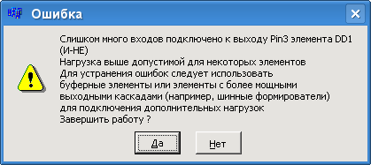
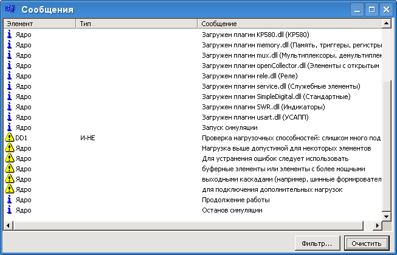

В этом разделе приведены описание элементов, реализованных в различных подключаемых модулях программы. Описаны следующие модули:
- Индикаторы (swr.dll) – различные индикаторы (одноразрядные и многоразрядные, восьмисегментные и двенадцатисегментные);
- Инструменты (instruments.dll) – генератор прямоугольных импульсов, восьмиканальный запоминающий осциллограф, элементы с постоянными уровнями на выходах, светодиод (LED) и переключатель;
- Инструменты Pro (ins2.dll) – сюда входят дополнительные инструменты: генератор двух тактовых последовательностей (для процессора Intel 8080), генератор одиночного импульса, генератор последовательности импульсов, блоки переключателей;
- Мультиплексоры и демультиплексоры (mux.dll);
- Память, триггеры, регистры (memory.dll) – ОЗУ (включая и двухпортовое), одно- и двухступенчатые триггеры, обычные и сдвиговые регистры;
- Служебные элементы (service.dll) – разнообразные элементы, например клавиатура, шинные формирователи;
- Стандартные (simpledigital.dll) – разнообразные логические элементы;
- Шифраторы и дешифраторы (codec.dll);
- Другие элементы (extra.dll) – этот плагин содержит модель арбитра шины (Philips 74F786) и адресного селектора на 4 диапазона адресов;
- Микросхемы серии КР580 (KP580.dll) - модели БИС комплекта КР580;
- Аналоговые элементы (atools.dll) - модели разнообразных аналоговых элементов;
- АЛУ (alu_.dll) - модели АЛУ с полным управлением.
Обозначения, используемые в описаниях:
- L – низкий уровень (уровень нуля);
- H – высокий уровень (уровень единицы);
- L->H – перепад с низкого высокий. H->L – наоборот;
- L->H, H->L – прямоугольный импульс (сначала фронт, затем срез);
- x – любой уровень сигнала.
Обратите внимание, что программа проверяет число входов, подключенных
к выходам элементов. Число подключенных к одному выходу входов не должно превышать
нагрузочной способности элементов. Здесь приняты следующие значения для
нагрузочных способностей:
- Для шинных формирователей и системного контроллера - до 50 подключаемых входов;
- Для прочих элементов - не более 10.
Если при запуске схемы обнаруживается превышение допустимой нагрузки, программа
выдает на экран сообщение вида:

Кроме того, в окне сообщений появляются вот такие записи:
